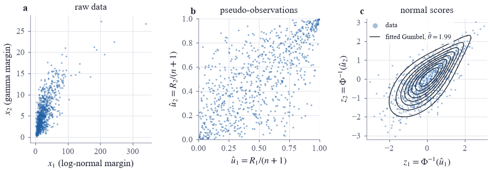
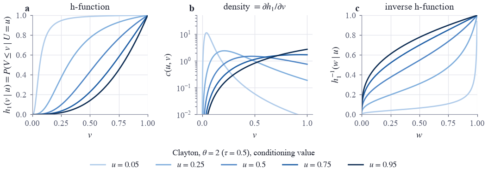
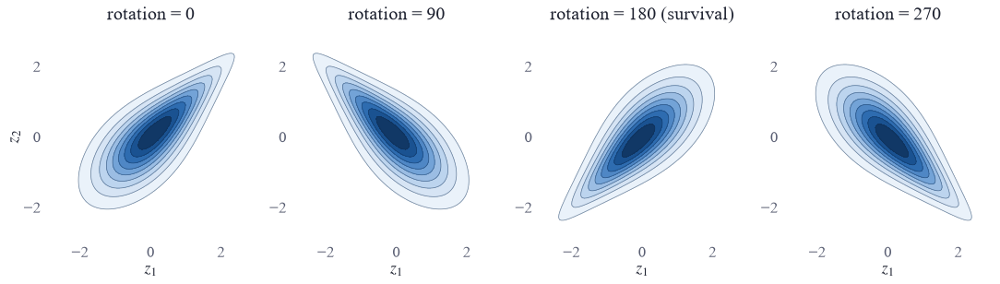
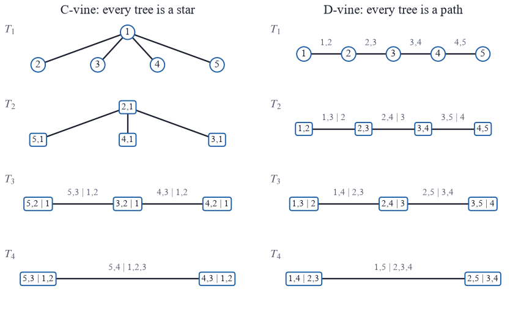

Concepts¶
This page collects the theory needed to use fortvine with confidence: what a copula is, how data are brought to the copula scale, how dependence is summarised, which functions of a pair copula a vine needs, and how vines glue pair copulas into a \(d\)-dimensional model. The notation follows the code: a pair copula is evaluated at \((u_1, u_2)\), a vine at a row \(u = (u_1, \dots, u_d)\).
For book-length treatments see Joe (1997, 2014), Nelsen (2006) and Czado (2019) in the references.
Copulas and Sklar's theorem¶
A \(d\)-dimensional copula \(C\) is the distribution function of a random vector \((U_1, \dots, U_d)\) whose components are each uniform on \((0, 1)\). Copulas matter because of the theorem of Sklar (1959): for any joint distribution function \(F\) with margins \(F_1, \dots, F_d\) there is a copula \(C\) with
and \(C\) is unique on the product of the ranges of the margins (in particular everywhere when all margins are continuous). Conversely, any copula combined with any margins in this way gives a valid joint distribution. The margins carry everything about each variable on its own; the copula carries everything about how the variables move together.
With continuous margins and densities \(f_j\), differentiating gives the density factorisation that all likelihood computations rest on:
The log-likelihood therefore splits into a sum of marginal terms and a copula term, which is why the dependence model can be estimated separately from the margins.
Some reference copulas:
| Copula | \(C(u_1, u_2)\) | Meaning |
|---|---|---|
| independence \(\Pi\) | \(u_1 u_2\) | no dependence (fortvine family 0) |
| comonotonicity \(M\) | \(\min(u_1, u_2)\) | perfect positive dependence (upper Fréchet bound) |
| countermonotonicity \(W\) | \(\max(u_1 + u_2 - 1, 0)\) | perfect negative dependence (lower Fréchet bound, \(d = 2\)) |
Every bivariate copula lies between them: \(W \le C \le M\).
Pseudo-observations¶
In practice the margins are unknown. The standard remedy is to replace each observation by its scaled rank within its column,
so that the transformed data live in \((0, 1)\) and are approximately uniform. Dividing by
\(n + 1\) instead of \(n\) keeps the values away from the boundary, where many copula densities
are infinite. These pseudo-observations are what fv_pseudo_obs_nd(x, u) computes; tied
values receive their average rank. Fitting a parametric copula to pseudo-observations by
maximum likelihood is the semiparametric (canonical) maximum-likelihood method of Genest,
Ghoudi & Rivest (1995). If the margins have been modelled parametrically instead, the
probability integral transforms \(\hat F_j(x_{ij})\) can be used directly.

fortvine never sees raw data: every routine expects copula data in \((0, 1)\). Values are clamped internally to \([10^{-10}, 1 - 10^{-10}]\) (see Numerics).
Discrete variables
For a discrete margin the probability integral transform is not uniform and the copula is not unique. fortvine follows the convention of Panagiotelis, Czado & Joe (2012) and vinecopulib: for each discrete variable pass both \(u = F(x)\) and \(u^- = F(x^-)\) (the distribution function just below \(x\)). See Discrete and mixed data and the example.
Measuring dependence¶
Kendall's tau¶
Two observations \((x_1, y_1)\) and \((x_2, y_2)\) are concordant if both coordinates move in the same direction and discordant otherwise. Kendall's tau is the probability of concordance minus the probability of discordance for two independent draws. It depends on the copula only:
For many one-parameter families \(\tau\) is a simple function of the parameter, which is
used for starting values and for estimation by inversion of tau (method = FV_ITAU):
| Family | \(\tau(\theta)\) |
|---|---|
| Gaussian, Student \(t\) | \(\tfrac{2}{\pi} \arcsin \rho\) |
| Clayton | \(\theta / (\theta + 2)\) |
| Gumbel | \(1 - 1/\theta\) |
| Frank | \(1 - \tfrac{4}{\theta}\bigl(1 - D_1(\theta)\bigr)\), \(D_1(\theta) = \tfrac{1}{\theta}\int_0^\theta \tfrac{t}{e^t - 1}\,\mathrm dt\) |
| Archimedean with generator \(\varphi\) | \(1 + 4 \int_0^1 \varphi(t) / \varphi'(t)\, \mathrm dt\) |
| Extreme-value with Pickands \(A\) | \(\int_0^1 \tfrac{t(1 - t)}{A(t)}\, \mathrm dA'(t)\) |
The sample version, fv_kendall_tau(x, y), is the tau-b statistic, which corrects for ties,
with \(n_c, n_d\) the concordant and discordant pairs and \(n_x, n_y\) the pairs tied in \(x\) or
in \(y\). fortvine computes it in \(O(n \log n)\) operations with the merge-sort algorithm of
Knight (1966); fv_tau_mat fills the whole \(d \times d\) matrix in parallel. Absolute
Kendall taus are the default edge weights of vine structure selection; other weights
(Spearman's rho, Hoeffding's D, Chatterjee's xi, mutual information, ...) are selected by
fv_controls%tree_crit.
Tail dependence¶
Rank correlations average over the whole unit square. Risk applications care about the corners, which the tail dependence coefficients measure:
A family with \(\lambda_U > 0\) lets very large values of both variables occur together far more often than a Gaussian model with the same correlation, whose tail coefficients are 0.
| Family | \(\lambda_L\) | \(\lambda_U\) |
|---|---|---|
| Gaussian (\(\lvert\rho\rvert < 1\)) | 0 | 0 |
| Student \(t\) (\(\rho\), \(\nu\)) | \(2\, t_{\nu+1}\!\left(-\sqrt{(\nu + 1)(1 - \rho)/(1 + \rho)}\right)\) | same |
| Clayton | \(2^{-1/\theta}\) | 0 |
| Gumbel, Joe | 0 | \(2 - 2^{1/\theta}\) |
| Frank, Plackett, FGM, AMH | 0 | 0 |
| BB1 (\(\theta\), \(\delta\)) | \(2^{-1/(\theta\delta)}\) | \(2 - 2^{1/\delta}\) |
| extreme-value with Pickands \(A\) | 0 (unless \(C = M\)) | \(2\bigl(1 - A(1/2)\bigr)\) |
A rotation by 180 degrees exchanges \(\lambda_L\) and \(\lambda_U\). The tail dependence example compares these limits with the exact finite-level values and with empirical estimates, and shows how slowly some of them are approached.
Conditional distributions: h-functions¶
Vines never need the bivariate copula \(C\) itself as much as its partial derivatives, the conditional distribution functions
In fortvine hfunc1(u1, u2, out) returns \(h_1(u_2 \mid u_1)\) (it conditions on the first
argument) and hfunc2 returns \(h_2(u_1 \mid u_2)\). Both are distribution functions in the
free argument, increasing from 0 to 1, and their derivatives in that argument are the
density:
For exchangeable copulas, \(C(u_1, u_2) = C(u_2, u_1)\), the two coincide after swapping the arguments; for asymmetric families (Tawn, Khoudraji, asymmetric logistic, ...) they do not.
The inverse h-functions solve \(h_1(v \mid u_1) = w\) and \(h_2(v \mid u_2) = w\) for \(v\):
hinv1(u1, w, out) and hinv2(w, u2, out). They are closed-form for the elliptical,
Clayton and Frank families and use specialised monotone Newton iterations for Gumbel and
Joe; every other family is inverted by a safeguarded Newton iteration whose derivative is
the exact density, falling back to bisection inside a maintained bracket.

Rotations¶
Many families can only express positive dependence, and many have a tail in one corner only. Rotating the copula density by 90, 180 or 270 degrees creates the missing variants. With \((A, B)\) distributed as the unrotated copula \(C_0\), fortvine's rotations (counter-clockwise, the convention of vinecopulib) are
rotation |
point passed to \(C_0\) | density | distribution function |
|---|---|---|---|
| 0 | \((u_1, u_2)\) | \(c_0(u_1, u_2)\) | \(C_0(u_1, u_2)\) |
| 90 | \((u_2,\ 1 - u_1)\) | \(c_0(u_2, 1 - u_1)\) | \(u_2 - C_0(u_2, 1 - u_1)\) |
| 180 | \((1 - u_1,\ 1 - u_2)\) | \(c_0(1 - u_1, 1 - u_2)\) | \(u_1 + u_2 - 1 + C_0(1 - u_1, 1 - u_2)\) |
| 270 | \((1 - u_2,\ u_1)\) | \(c_0(1 - u_2, u_1)\) | \(u_1 - C_0(1 - u_2, u_1)\) |
The 180-degree rotation is the survival copula: it moves a lower tail to the upper corner. Rotations by 90 and 270 degrees turn positive into negative dependence, placing the tail of \(C_0\) in the \((1, 0)\) or \((0, 1)\) corner respectively. Families that are already radially symmetric and cover negative dependence (Gaussian, Student, Frank, Plackett, FGM, AMH) are not rotated; for the rest, family selection tries the rotations that match the sign of the empirical tau. See Rotations and asymmetry.

Pair-copula constructions and vines¶
The idea¶
Few parametric \(d\)-dimensional copulas are flexible enough for real data: most impose one kind of dependence on all pairs. A pair-copula construction (Joe 1996; Bedford & Cooke 2002; Aas et al. 2009) instead builds the density from \(d(d-1)/2\) bivariate copulas, some of which act on conditional distributions. For three variables, one such decomposition is
where \(c_{13;2}\) is the copula of \(U_1\) and \(U_3\) given \(U_2\), evaluated at their two conditional distribution functions. Each factor is an ordinary pair copula from any family, so a 10-dimensional model can mix 45 different families, rotations and tail behaviours.
Regular vines¶
Which pairs are allowed is organised by a regular vine (R-vine): a sequence of trees \(T_1, \dots, T_{d-1}\) in which
- \(T_1\) is a tree on the \(d\) variables;
- the edges of \(T_k\) are the nodes of \(T_{k+1}\);
- (proximity) two nodes of \(T_{k+1}\) may be joined only if, as edges of \(T_k\), they share a node.
Each edge \(e\) of tree \(T_k\) is labelled by a conditioned pair \(\{a, b\}\) and a conditioning set \(D\) with \(|D| = k - 1\), and carries the pair copula \(c_{a,b;D}\). The vine density is the product over all edges:
The conditional arguments are themselves h-functions of edges in the tree below, through the recursion (Joe 1996)
where \(h\) is the h-function of the pair copula of \((a, j; D \setminus j)\). Evaluating a
vine is therefore one sweep through the trees: every edge needs one density evaluation and
at most two h-function evaluations per observation. fortvine stores the structure in a
compact natural-order array (st(edge, tree) with the variable order); vc%matrix()
returns the equivalent R-vine matrix in the original variable labels. The number of
distinct R-vine structures grows super-exponentially,
\(\tfrac{d!}{2}\, 2^{\binom{d-2}{2}}\) (Morales-Nápoles 2011), which is why structures are
selected greedily.
Two special shapes have their own constructors:
- C-vine (canonical): every tree is a star; one variable, the root, is linked to all
others in \(T_1\), the next root to all remaining ones in \(T_2\), and so on. Natural when one
variable drives the rest.
set_cvine(order). - D-vine (drawable): every tree is a path; \(T_1\) links neighbours in
order, and later trees follow. Natural for ordered variables such as time lags.set_dvine(order).

Structure selection¶
fortvine selects a vine with the sequential method of Dissmann et al. (2013):
- compute the edge weights of all admissible pairs (default \(|\hat\tau|\));
- find the maximum spanning tree (Prim's or Kruskal's algorithm);
- for every edge choose family, rotation and parameters by the selection criterion and compute the pseudo-observations of the next tree with the fitted h-functions;
- repeat on the pairs allowed by the proximity condition, until \(T_{d-1}\).
The procedure is greedy: putting the strongest dependence into the first trees is a good
heuristic, not a guarantee of the best global vine (the vine example
shows a case where it misses the true structure). With a structure fixed by
set_cvine/set_dvine only steps 3-4 run.
The simplifying assumption¶
In general the copula of \((U_a, U_b)\) given \(U_D = u_D\) depends on the value \(u_D\). Vines
used in practice assume it does not: \(c_{a,b;D}\) is one fixed copula applied to the
conditional distribution functions. This simplifying assumption (Hobæk Haff, Aas &
Frigessi 2010) is what makes estimation feasible; it is exact for Gaussian and Student
vines and a good approximation in many applications. fortvine can relax it for selected
edges (parameters varying with the conditioning variables, after Acar, Craiu & Yao 2011,
with a constant-conditional-correlation test following Kurz & Spanhel 2022) through
vc%relax.
Truncation and thresholding¶
High trees often carry little dependence. A vine truncated at level \(k\) sets every pair
copula in trees \(k+1, \dots, d-1\) to independence, which removes their parameters and their
evaluation cost. A threshold sets an edge to independence when its weight is below a
cut-off. Both can be fixed (trunc_lvl, threshold) or chosen automatically by the
modified BIC for vines (mBICv, Nagler, Bumann & Czado 2019) with select_trunc and
select_threshold.
Selection criteria¶
Given the maximised log-likelihood \(\ell\), the number of parameters \(k\) and the sample size \(n\), family selection compares
and, for vines, the mBICv, which adds to the BIC of each tree \(t\) a prior that the pair
copulas of tree \(t\) are non-independent with probability \(\psi_0^t\) (fv_controls%psi0,
default 0.9):
with \(q_t\) the number of non-independence edges in tree \(t\). The prior favours sparse vines, increasingly so in higher trees. For the nonparametric families (TLL, Bernstein) \(k\) is the effective number of parameters of the smoother.
The Rosenblatt transform¶
The Rosenblatt transform (Rosenblatt 1952) maps a \(d\)-dimensional observation to independent uniforms by successive conditioning:
If \(u\) follows the model, \(w\) is uniform on \((0, 1)^d\) with independent components. In a
vine every conditional distribution is a chain of h-functions, so the transform costs about
the same as one density evaluation (vc%rosenblatt). Applied to data it produces
model-based residuals for goodness-of-fit checks: their columns should be uniform and
mutually independent. The conditioning order is the vine's variable order, so the first
transformed column is the variable with the empty conditioning set.
For discrete variables the conditional distribution has jumps and \(w\) is not uniform; fortvine then returns Brockwell's (2007) randomised transform \(W F(x_k \mid \cdot) + (1 - W) F(x_k^- \mid \cdot)\) with independent uniforms \(W\), which is again i.i.d. uniform under the model.
Simulation¶
Inverting the Rosenblatt transform turns independent uniforms into a sample from the model:
and in a vine each conditional quantile is a chain of inverse h-functions, taken from the
top tree down. vc%inverse_rosenblatt(w, u) does exactly this, and vc%simulate(n, u, seed)
draws the uniforms first. For a single pair it reduces to
\(u_2 = h_1^{-1}(w \mid u_1)\), i.e. cop%hinv1(u1, w, u2). Simulated copula data are mapped
to any margins with the marginal quantile functions, \(x_{ij} = F_j^{-1}(u_{ij})\).
Estimation¶
For a single pair copula fortvine maximises the log-likelihood \(\ell(\theta) = \sum_i w_i \log c(u_{i1}, u_{i2}; \theta)\) (observation weights \(w_i\) default to 1) inside the family's parameter box. One-parameter families can instead be estimated by inverting Kendall's tau. The maximisation uses exact parameter scores from dual-number arithmetic and Fisher-scoring steps; see Exact parameter scores. A vine is estimated edge by edge, tree by tree (sequential estimation), each edge on the pseudo-observations produced by the trees below; this is the standard estimator of vinecopulib and VineCopula and is consistent, although not fully efficient compared with a joint maximisation.